Gastronomika
- Understanding
- Ideation
- Branding
- UX/UI Design
Understanding
Problem
As a substitute for material gifts, experiential plans and in particular gastronomic plans, have been imposed as a gift in many groups, couples, families. But many restaurants do not have any protocol to create these plans, manage reservations, etc. or they are closed plans that often do not fit the pocket of the gift givers.
Task
To be able to gift meals at restaurants and have them fit my budget, dates, etc. without it being a headache.


Ideation
Developing a categorization, organization and structure to make the user experience, which combines the interaction with a digital device and physical experience, as smooth as possible.
Service Blueprint
Information Architecture
User Flow
Branding
Styleguide
Sophistication, quality and prominence to what is important: the experience.
 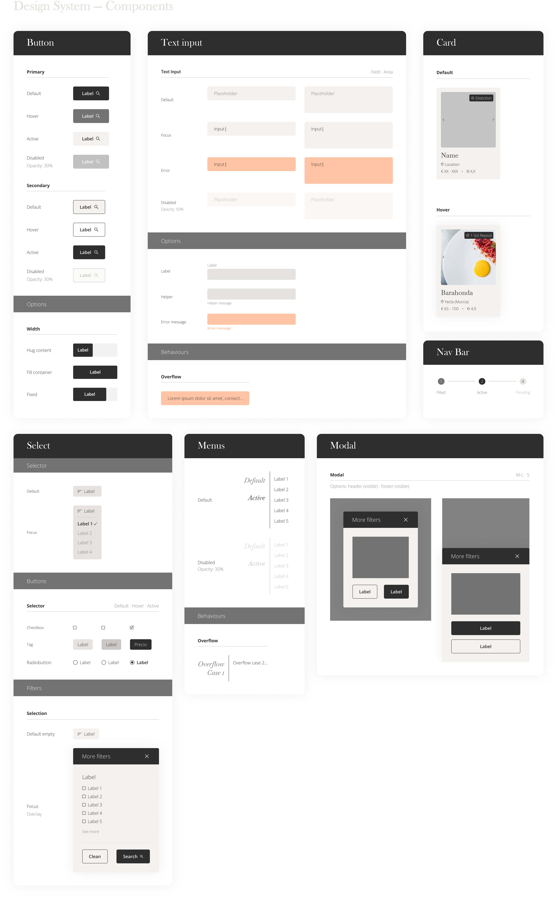
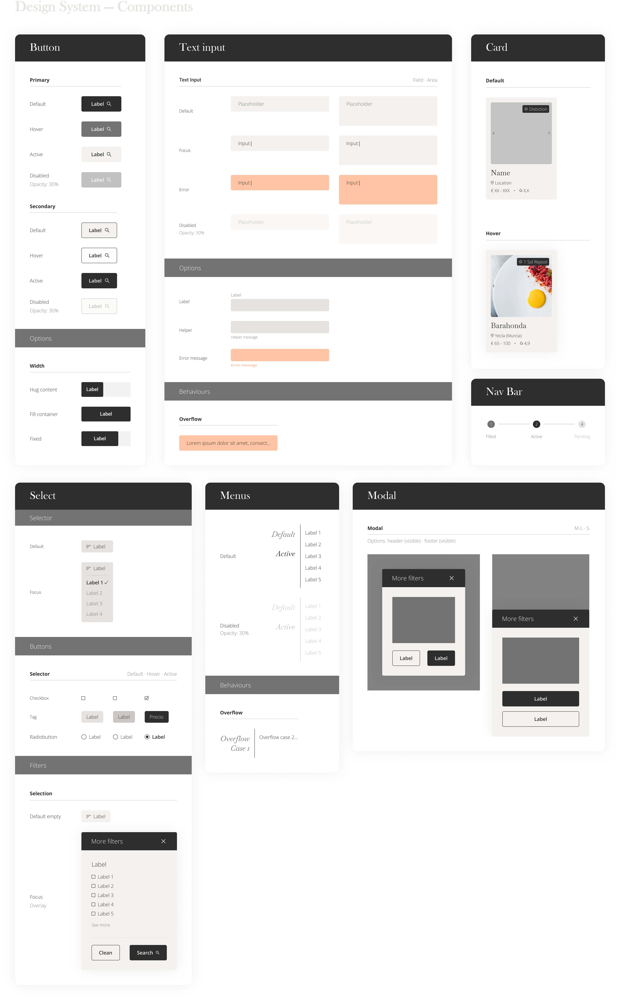
Design
Designing the main screens the user will interact with: homepage —which has the challenge of making the service process easily understandable—, list of experiences, experience page and checkout form.
 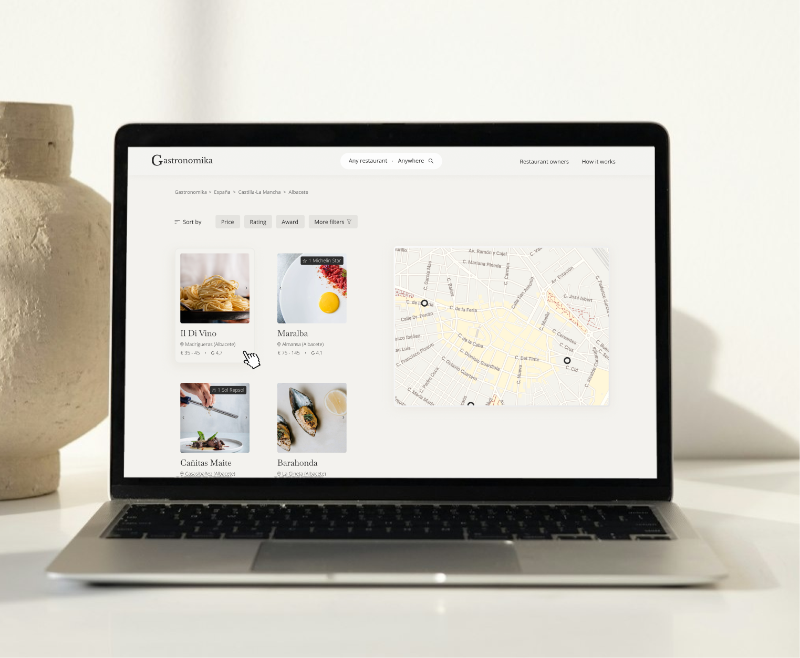
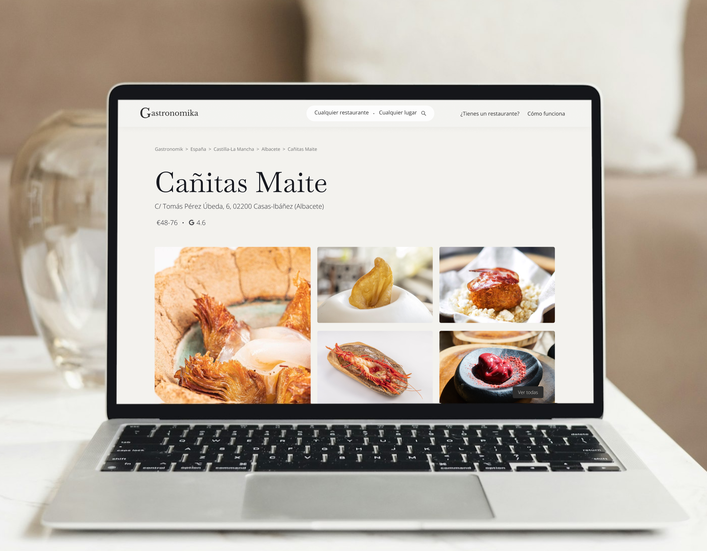
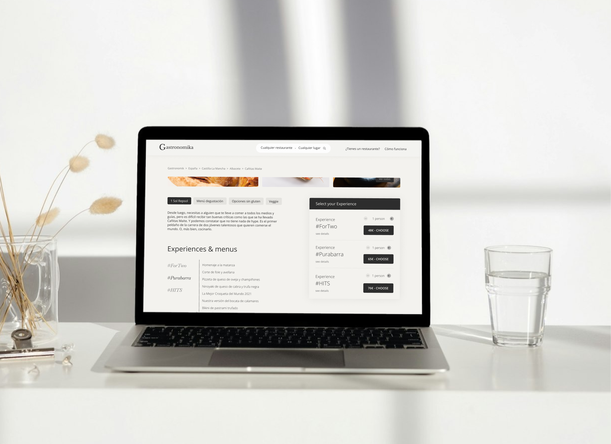
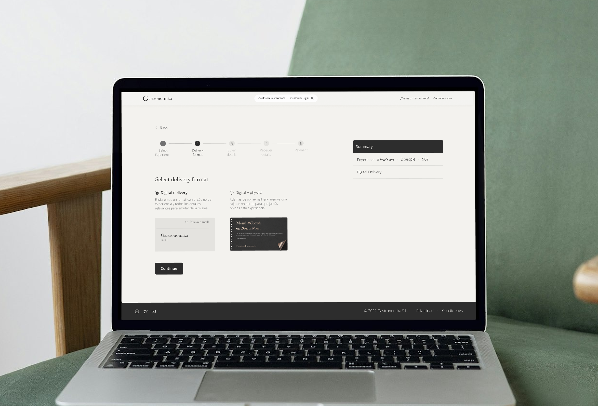
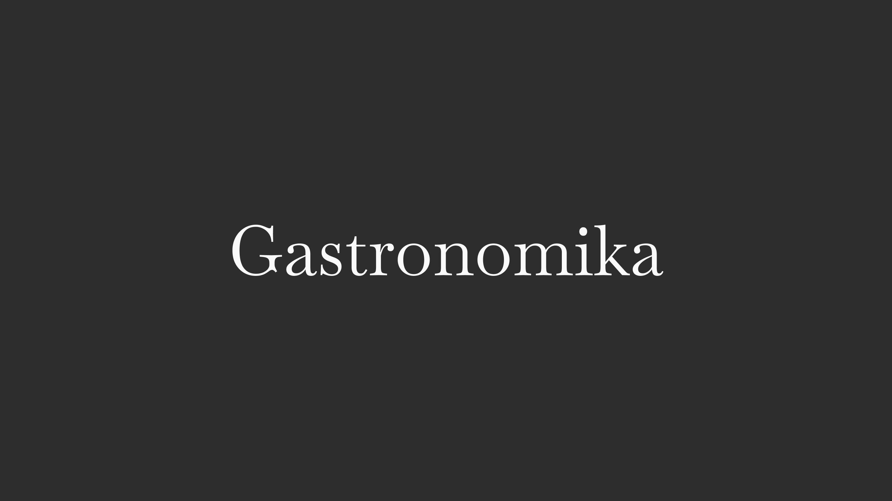
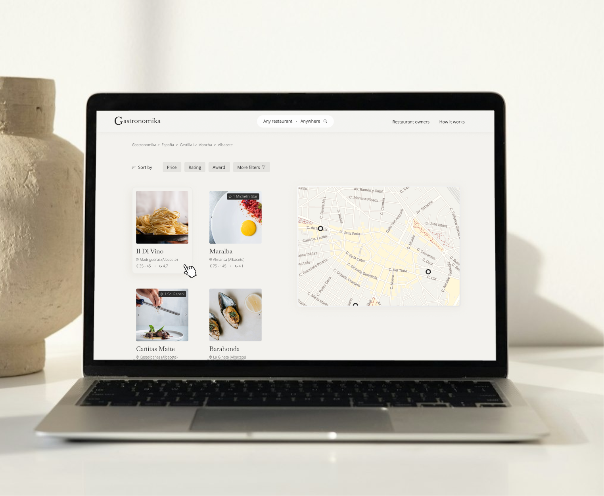
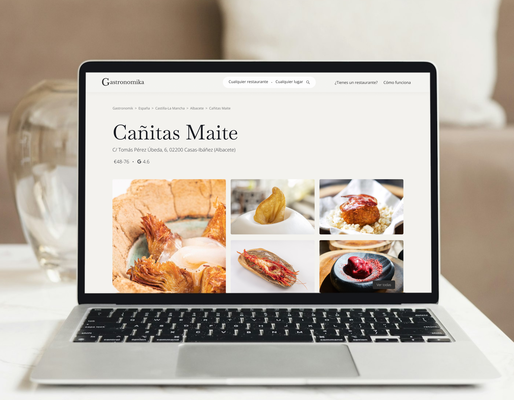
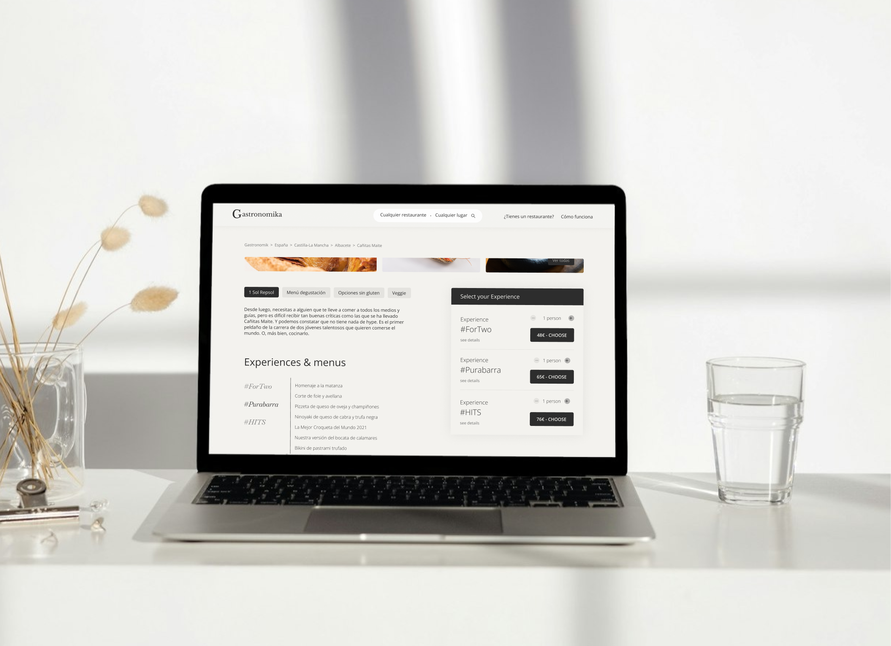
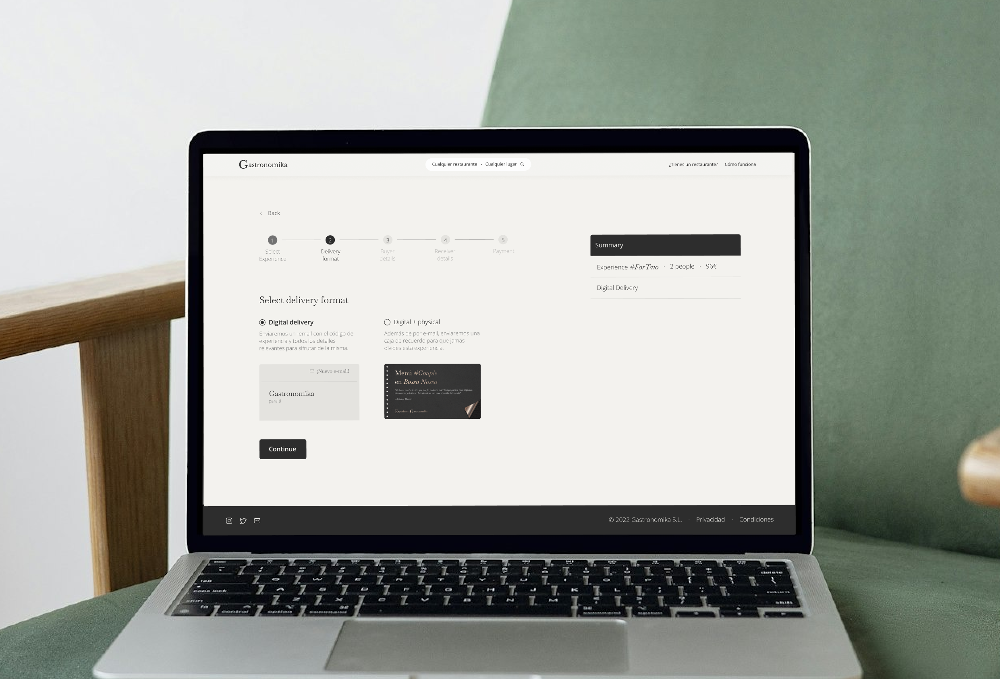
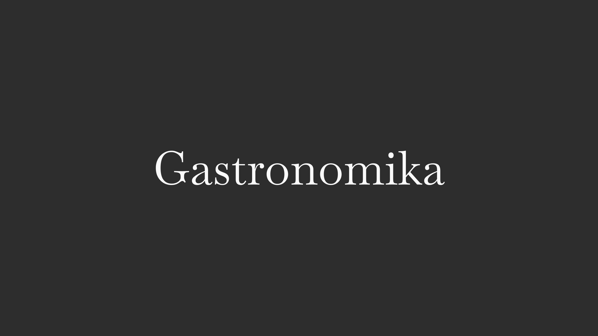